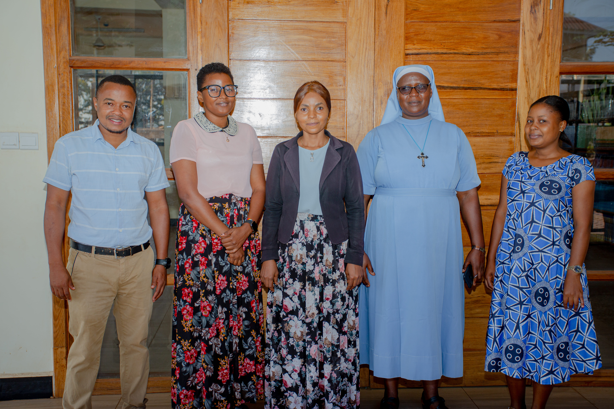

The Arts department is one among the academic departments at St. Pamachius Inclusive Secondary School. The arts departments is responsible for the teaching of five subjects which are History, Civics, Geography, Kiswahili and English Language.
History is the systematic study and documentation of human activity. History is an umbrella term comprising past events as well as the memory, discovery collection, organization, presentation and interpretation of these events. Historians seek knowledge of the past using historical sources such as written documents, oral accounts, art and material artifacts and ecological makers.
Civics is the study of the rights and obligations of citizens in society. The term derives from the latin word "civicus" meaning "relating to a citizen". Civic education is the study of the theoritical, political and practical aspects of citizenship as well as its rights and duties. It includes the study of government with attention to the role of citizen.
Civics is the study of the rights and obligations of citizens in society. The term derives from the latin word "civicus" meaning "relating to a citizen". Civic education is the study of the theoritical, political and practical aspects of citizenship as well as its rights and duties. It includes the study of government with attention to the role of citizen.


Geography is a field of science devoted to the study of the lands, features, inhabitants and phenomena of the Earth.
Language is a structured system of communication that consists of grammar and vocabulary. It is the primary means by which human convey meaning, both in spoken and written forms and may also be conveyed through sign language. The language subjects taught by the arts department are English and Swahili.
The arts departments has seven teachers, Sr. Novatus Aloyce, Mr. Juvenal Kyara, Ms. Glory Kweka, Ms. Venosa Ulomi, Ms. Agnes Magele, Ms Anna Cosmas and Ms. Anastazia Kiondo.
Language is a structured system of communication that consists of grammar and vocabulary. It is the primary means by which human convey meaning, both in spoken and written forms and may also be conveyed through sign language. The language subjects taught by the arts department are English and Swahili.
The arts departments has seven teachers, Sr. Novatus Aloyce, Mr. Juvenal Kyara, Ms. Glory Kweka, Ms. Venosa Ulomi, Ms. Agnes Magele, Ms Anna Cosmas and Ms. Anastazia Kiondo.